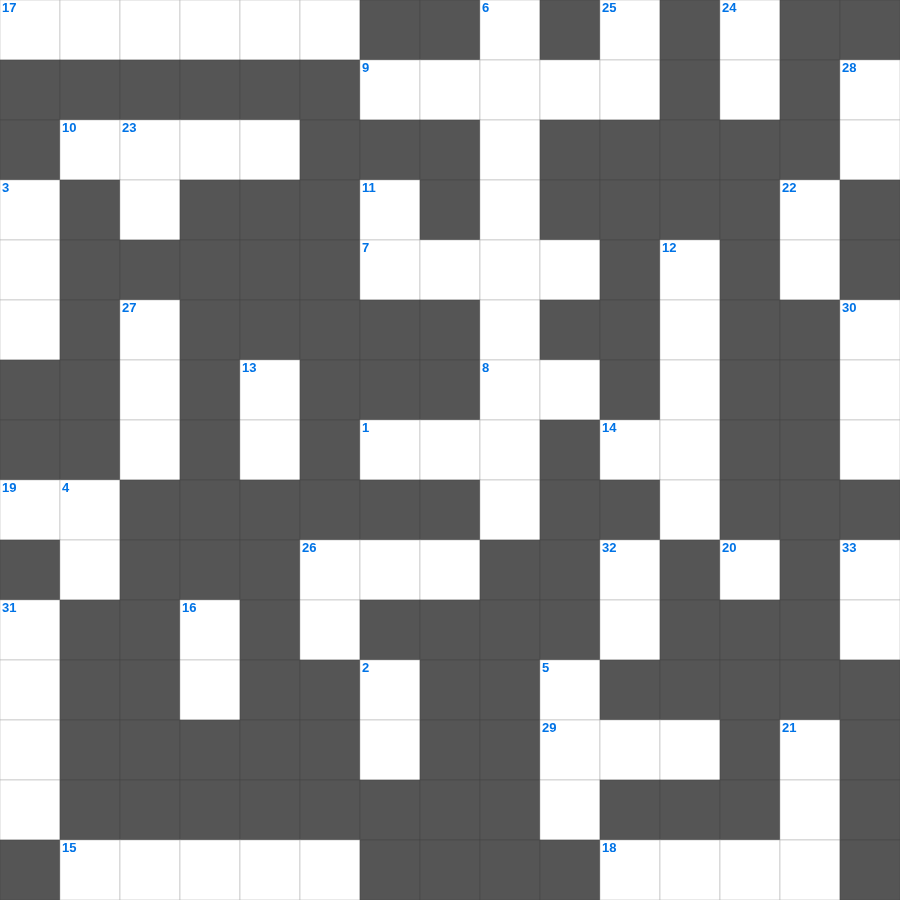

이사야: 새 하늘과 새 땅
📌 서비스 정의
십자가로세로는 교회 주보와 주일학교에서 사용할 수 있는 성경 기반 가로세로 퍼즐 서비스입니다. 성경 인물, 사건, 핵심 구절을 바탕으로 제작되었습니다. 온라인 풀이 및 인쇄 기능을 제공합니다.
📖 이사야란?
이사야는 유다 왕국의 멸망 위기 속에서 심판과 회복, 그리고 메시아의 오심을 예언한 책으로, 신약에서 가장 많이 인용되는 예언서 중 하나입니다.
📚 이사야의 주요 사건·주제
이사야의 소명(이사야 6장) · 임마누엘 예언 · 고난받는 종의 노래(이사야 53장) · 바벨론 멸망 예언 · 새 하늘과 새 땅 예언
이사야의 말씀을 퀴즈로 배우는 이사야 주일학교 퀴즈입니다. 가로 힌트와 세로 힌트를 보고 35개의 단어를 맞춰보세요. 인쇄도 가능하고 정답 확인도 바로 되니 소그룹 모임이나 가정 예배 시간에도 활용하실 수 있습니다.

📝 가로 힌트
1. 근신하라 이것하라 너희 대적 마귀가 우는 사자 같이 두루 다니며 삼킬 자를 찾나니
7. 내가 너희를 사랑한 것 같이 너희도 서로 이것하라
7. 믿음 소망 사랑 중 제일은 이것
8. 하나님을 경외하는 것이 이것의 근본
9. 야곱이 형의 낯을 피해 도망가다 꿈을 꿈
10. 예수님이 베드로와 야고보와 요한을 데리고 기도하신 동산
14. 바울의 고향
15. 떨기나무 불꽃 가운데서 모세가 들은 음성
17. 기드온의 용사들이 사용한 도구
18. 항상 이것하라
19. 베드로와 안드레의 직업
20. 너희는 먼저 그의 나라와 그의 이것을 구하라
26. 이스라엘이 광야에서 보낸 시간(년)
29. 하나님께 노래로 영광 돌리는 팀
📝 세로 힌트
2. 이스라엘이 430년 동안 거주한 나라
3. 요시야 왕이 성전 수리 중 발견한 것
4. 사흘 만에 다시 살아나신 기적
5. 최후의 만찬에서 떡과 포도주를 나누심
6. 불무불 속에 던져진 세 친구 이야기
11. 멜리데 섬에서 바울을 문 동물
12. 베드로가 예수님을 모른다고 세 번 부인한 후 들린 소리
13. 예수님이 우리 죄를 대신해 죽으신 은혜
16. 하나님과 대화하는 것
21. 일곱 가지가 달린 성막의 등잔대
22. 르호보암 왕 때 나라가 둘로 나뉨
23. 성전 세로 바쳤던 은화
24. 슬플 때 찢으며 입었던 옷
25. 너를 위하여 새긴 이것을 만들지 말고
26. 예수님이 율법의 완성이라고 하신 것
27. 광야 생활을 기억하며 텐트를 치는 절기
28. 잘못을 뉘우치고 하나님께 돌아오는 것
30. 좁은 문으로 들어가기를 이것하라
31. 성경 인물 중 가장 장수한 사람은?
32. 마지막 재앙: 처음 난 것들의 이것
🧩 이 퍼즐에서 배우는 내용
이 퍼즐은 이사야: 새 하늘과 새 땅의 핵심 단어와 개념을 자연스럽게 복습할 수 있도록 구성되었습니다. 주일학교 수업이나 개인 성경공부에서 학습 내용을 점검하는 용도로 바로 활용할 수 있습니다.
🧑🏫 교회 교육 자료 활용
이 퍼즐은 주일학교 교재 추천 자료로 활용할 수 있고, 주일학교 주보에 넣기 좋은 분량으로 구성되어 있습니다. 수업용 주일학교 교안에 활동지로 붙이거나, 예배 후 복습용 주일학교 공과교재로 바로 사용할 수 있습니다.
🏷️ 키워드
이사야 주일학교 퀴즈, 이사야, 십자가로세로, 성경퀴즈, 말씀퀴즈, 가로세로퍼즐, 주일학교 교재 추천, 주일학교 주보, 주일학교 교안, 주일학교 공과교재